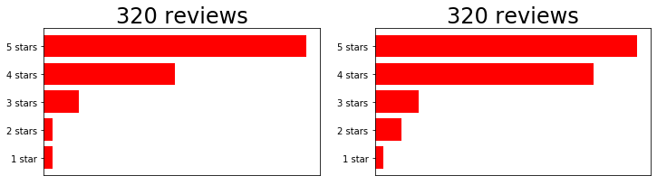
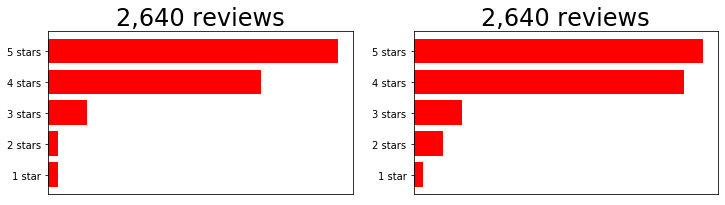

Exercise: building intuition about distributions
Let's revisit some foundational statistics to tap into some intuition you use all the time.
Say you're looking for a restaurant for dinner, and you are comparing two different restaurant options. If you see reviews that look like this, would you think one is better than the other? How sure are you?

Now, what if you saw these sets of reviews? Do you think one is better?

Finally, what about this set of reviews?

Chat with your neighbor: what factors about the reviews influence your assessment of which restaurant is better? How could this apply to your scRNAseq data?
Once we look at the second set of reviews, I would have more confidence that the restaurant on the right is superior, because there are more reviews.
Looking at the final set of reviews, we can be quite confident that there is a "real" difference in the mean review score, but the magnitude of this difference is small.
This is a very important distinction: a t-test compares our data to the null hypothesis that the means of two distributions are equal. This accounts for the mean, standard deviation, and sample size of the two distributions. However, a p-value alone does not tell us anything about the magnitude of that difference: with large N, even very small (and biologically meaningless) differences in expression values can still return very "statistically significant" p-values.
Looking at the first set of reviews, my conclusion would be "Maybe the right one is better? But there aren't many reviews yet, so I'm not sure."
Discussion